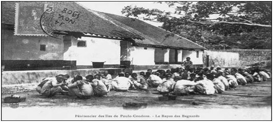
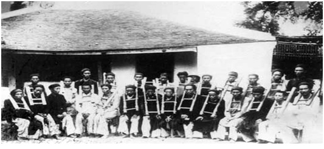
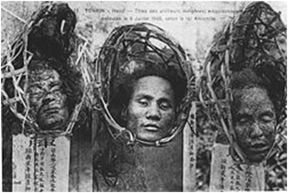
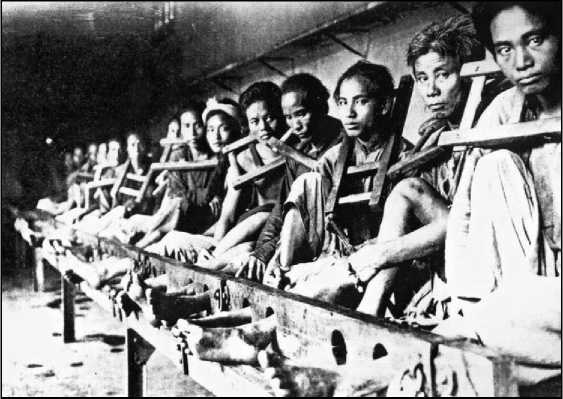
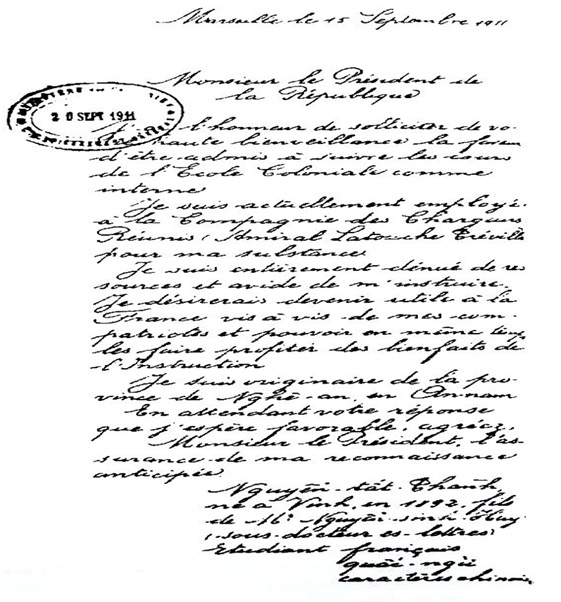

PHẦN THỨ NHẤT - NGỌN LỬA ẤP Ủ GIỚI TRÍ THỨC 1920 -1929 CHƯƠNG I
Vào những năm đầu của Thế Kỷ XX tại Paris, con người bị lưu đày Phan Chu Trinh, đã nhiều tuổi, vẫn liên hệ mật thiết với Phan Văn Trường, rồi sau đó ít lâu, với Nguyễn ái Quốc, Nguyễn Thế Truyền và Nguyễn An Ninh. Điều làm cho họ liên kết với nhau không phải là tuổi tác (giữa người nhiều tuổi nhất và người ít tuổi nhất chênh nhau 27 năm), cũng không phải là nguồn gốc (người thì ở đất bảo hộ Trung Kỳ và Bắc Kỳ, người thì ở Nam Kỳ, đất thuộc địa), mà là do họ có cùng một niềm say mê, đó là giải phóng dân tộc thoát khỏi tình trạng nô lệ hèn mọn và bất công, thoát khỏi tình trạng tù đọng bế tắc do đế quốc Pháp gây nên. Họ thường được những người Việt Nam gọi là Ngũ Long-Năm Con Rồng. Phải chăng những người Việt Nam từ nhiều thế kỷ nay đã tự nhận mình là Con Rồng Cháu Tiên? Họ là những người cắm những mục tiêu đầu tiên cho chặng đường mà từ năm 1930 người ta gọi là cuộc ‘’ Cách Mạng Đông Dương’’.

Thế Kỷ XIX đã khép lại với hai cuộc nổi dậy đẫm máu chống lại cuộc chinh phục của thực dân Pháp, đầu tiên là cuộc nổi dậy của các sĩ phu, Phong Trào Văn Thân, từ 1867 tới 1874, rồi đến cuộc nổi dậy của các quan lại Triều Đình, Phong Trào Cần Vương, từ 1885 tới 1896 (1). Hai cuộc nổi dậy đều thất bại, và từ năm 1897 người Pháp làm chủ toàn bộ đất nước Việt Nam.
Đầu Thế Kỷ XX, tầng lớp trí thức hăng hái đã từ bỏ con đường nổi dậy vô vọng. Không khí thời đại không còn phù hợp với những cuộc phiêu lưu đẫm máu theo xu hướng của một chế độ phong kiến bảo thủ không có tương lai; người ta dự cảm khác hẳn tới những điều kiện để giải phóng dân tộc Việt Nam: Hiện đại hóa về kinh tế và văn hóa là điều cần thiết. Cùng chung cái đích đó, có hai khuynh hướng nảy sinh, một khuynh hướng do Phan Bội Châu đề xướng, theo quân chủ, ngả về nền giáo dục hiện đại kết hợp với chiến tranh giải phóng (2), một khuynh hướng do Phan Chu Trinh chủ trương, theo hướng Cộng Hòa và Dân Chủ, trên tinh thần chung của các nhà triết học Pháp Thế Kỷ XVIII mà ông đọc qua những bản dịch chữ Hán.
Hai nhà trí thức trên có đi cùng nhau một chặng đường, thống nhất với nhau về ‘’cải cách văn hóa và phát triển tinh thần dân tộc’’ nhằm ‘’tránh cho người Việt Nam trở thành nô lệ’’ (3). Đó chính là mục đích của Hội Duy Tân do Phan Bội Châu bí mật thành lập năm 1904, biểu hiện đầu tiên của sự nảy sinh giai cấp tư sản bản xứ. Cả hai đều tán thành việc phổ biến một nền giáo dục tự do bằng chữ Quốc Ngữ; họ kêu gọi ‘’những người giàu và có ảnh hưởng’’ đứng ra thành lập các hội đoàn ở Bắc Kỳ, Trung Kỳ và Nam Kỳ để phát triển thương mại, thủ công và kỹ nghệ bản xứ, đồng thời mở các lớp học trong công xưởng, và từ năm 1906 ngầm tổ chức những cuộc du học sang Nhật (Phong Trào Đông Du) (4). Con đường của hai người chia tách hẳn khi Phan Bội Châu và các du học sinh bị trục xuất khỏi Nhật vào năm 1909, Phan Bội Châu tuyên bố tán thành khủng bố và tuyển mộ một đội quân.
Cuộc đời của người đứng đầu nhóm Ngũ Long ra sao trước khi ông tới Paris?Phan Chu Trinh sinh năm 1872 tại làng Tây Lộc (Tỉnh Quảng Nam, Trung Kỳ), làm quan tại Bộ Lễ vào năm 1903, nhưng đến năm 1905 ông bất mãn với sự thối nát và trì trệ cổ hủ của Triều Đình cố giữ thái độ dè dặt dưới bóng bảo hộ của người Pháp. Phan Chu Trinh từ quan, ông bôn ba khắp ba kỳ để lắng nghe người dân nghĩ gì và để tìm hiểu về những sự‘’nhũng lạm của quan lại’’ ở khắp nơi.
Vào đầu năm 1906, giả trang làm cu-li, ông được những người làm đầu bếp trên tầu che giấu, vượt biển tới gặp Phan Bội Châu ở Quảng Châu rồi cùng đi với Phan Bội Châu sang Nhật để Phan Bội Châu chuẩn bị đón tiếp du học sinh và chuẩn bị cho họ được nhận vào các trường võ bị. Phan Chu Trinh cho rằng dựa vào sự giúp đỡ của Nhật Bản để đuổi Pháp là một ý tưởng nguy hiểm ‘’một khi quân Nhật vào thì có thể sẽ khó mà đuổi họ ra’’; hơn nữa ‘’nếu có quyết tâm nổi dậy thì dân tộc cũng thiếu chỗ dựa, thiếu vũ khí và tài chính’’.
Trở về đất nước, Phan Chu Trinh gửi cho Toàn Quyền Paul Beau, vào tháng 10 năm 1906, một Bản Ghi Nhận về những điều tệ hại mà dân An Nam phải chịu (5), kêu gọi ông ta chú ý tới nạn tham nhũng của quan trường đã làm tăng thêm gánh nặng sưu thuế cho dân. Ông nhấn mạnh vào trách nhiệm của người Pháp, kẻ đồng lõa với tình trạng trên, và kêu gọi người Pháp tiến hành những cuộc cải cách nhằm tuyển lựa kỹ lưỡng quan lại, bãi bỏ chế độ khoa cử cũ, cải tiến pháp luật, sửa đổi bộ Luật dã man của Vua Gia Long (6) còn hiện hành ở Trung Kỳ và Bắc Kỳ, mở rộng hệ thống giáo dục, xây dựng một nền giáo dục hiện đại hướng về phát triển thủ công, kỹ nghệ và thương mại bản xứ, (7) nhằm đưa đất nước ra khỏi ‘’tình thế cấp bách’’.
Từ sau khi có bản tường trình đó, giới quan lại tham nhũng tỏ ra căm thù Phan Chu Trinh đến xương tủy.
Trong quá trình vận động của Hội, Lương Văn Can mở Trường Đông Kinh Nghĩa Thục vào năm 1907 với mục đích dùng chữ Quốc Ngữ để phổ biến những kiến thức mới hữu ích cho sự phát triển nền kinh tế của đất nước, thay vì đóng khuôn trong nền học kinh sử của Đạo Khổng qua chữ Hán. Các thầy giáo tự nguyện bỏ bộ quần áo cổ truyền bằng lụa tàu, và mặc âu phục, bỏ búi tóc, cắt tóc ngắn. Những việc nho nhỏ đó cũng làm cho đám quan lại không chấp nhận được và coi đó như một chứng cứ mưu toan nổi loạn, một dấu hiệu tập hợp. Chính quyền bảo hộ cũng sớm lo ngại về cái trung tâm của chủ nghĩa quốc gia đang tỏa sáng khắp nước: ‘’Đối với các ngài thực dân, bọn An Nam bẩn thỉu này lại dám cho phép mình bắt chước kiểu người Âu!’’ (Phan Chu Trinh). Thế là chẳng bao lâu nhà trường bị đóng cửa.
Vào mùa Xuân năm 1908, tại Trung Kỳ đột khởi những cuộc biểu tình của nông dân, phong trào lan nhanh như dây thuốc súng. Lần đầu tiên chủ nghĩa đế quốc thực dân phải đương đầu trực tiếp với quần chúng nông dân bị đè nén trong bần cùng đã nổi dậy chống lại thuế thân và sưu dịch. Cuộc đàn áp của Pháp và Nam Triều diễn ra mau lẹ và đẫm máu. Nhân cớ này Triều Đình Huế tiến hành ngược đãi tầng lớp sĩ phu Duy Tân. Trong tất cả các tỉnh, nơi nào có trường học và hội buôn, hội thủ công đều diễn ra những cuộc lục soát thanh trừng dữ dội. Trường sở bị phá hủy, thầy giáo bị tra khảo, công xưởng bị đóng cửa. Lính khố xanh (lính tập) được thể tha hồ cướp bóc, biến những nơi đó thành chuồng ngựa hoặc nhà ở cho vợ con họ...Tại làng Phú Lâm chẳng hạn, người hương trưởng bị kết án ba năm tù khổ sai vì đã xây dựng trường học, lập các hội làm vườn, xây cầu và đường xá cho nông dân; cô em gái họ của ông, một nữ giáo viên, bị giải lên tỉnh lỵ, cổ đeo gông. Ba trường học trống rỗng vì thiếu vắng 150 học sinh.
Ngày 9 tháng ba, Phan Chu Trinh đang ở Hà Nội thì nông dân của làng ông tuần hành lên Tỉnh lỵ Đại Lộc (Quảng Nam). Bị vu cho là gây nên những cuộc biểu tình đó, ông bị bắt cùng với một số sĩ phu bị chính quyền thực dân nghi ngờ và bị Triều Đình Huế bêu xấu, cái Triều Đình mà họ khinh bỉ. Phan Chu Trinh bị giải về Huế, ở đó ông tuyệt thực làm reo. Triều Huế kết án tử hình Phan Chu Trinh vì đã ‘’tiến hành những mưu đồ cùng với kẻ phản nghịch Phan Bội Châu, đã thu thập những ghi nhận hưởng ứng Phan Bội Châu’’.

Poulo Condore. Le Repas des Bagnards. Đảo Côn Sơn. Bữa ăn tại Bagnards

Sĩ phu bị đóng gông sau những cuộc nông dân biểu tình chống sưu thế năm 1908 ở Trung Kỳ.
-
Nếu không có Hội Nhân Quyền can thiệp, Phan Chu Trinh đã bị hành quyết sau một thời gian ngắn. Án tử hình đuợc giảm thành quản thúc chung thân, qua tháng năm ông bị đưa ra ngục Côn Sơn.
Chính thời gian ở Côn Đảo, Phan Chu Trinh sáng tác một số bài thơ, trong đó có bài Đèn Sáp mà học sinh Sài Gòn đã hăng hái đọc thuộc lòng lên vào năm 1926, năm ông mất:
Năm nhồi mười nắn thế không oai?
Đèn sáp khen cho thật dẻo dai.
Thẳng rẳng sợi tim trong mấy tấc,
Lăn tròn bao sáp biết nhiêu ngoai.
Đốt đầu dốc tỏ đêm tăm tối,
Nóng ruột vì chưng sự sáng soi.
Hé cửa trách ai cho gió lọt,
Canh tàn rơi giọt tỏ cùng ai!
Vào năm 1911, Hội Nhân Quyền lại can thiệp cho Phan Chu Trinh ra khỏi nhà tù Côn Đảo, vụ án của ông được xét lại, và nhà nước bảo hộ chấp thuận lưu đày ông qua Pháp, cùng với con trai nhỏ của ông là Phan Chu Dật, kèm theo một niên bổng là 5.400 francs.
Vừa tới Pháp, Phan Chu Trinh bắt tay ngay vào việc ‘’đòi xét lại những phán quyết bất chính đáng’’ sau những vụ biểu tình hòa bình 1908-1909, và đòi thả những nạn nhân còn sống sót ra khỏi các nhà tù. Trong một bức thư gửi cho Bộ Thuộc Địa, ‘’Những cuộc biểu tình của người An Nam ở Trung Kỳ năm 1908’’ ông đã nêu lại lịch sử các sự biến, phân tích một số điều xét xử, mô tả trần trụi cuộc di chuyển quân sự của chuyến tàu chở tù nhân ra Đảo Côn Sơn, nơi những sĩ phu bị bắt ở Hà Tĩnh và Nghệ An bị trói chân tay như súc vật nằm rải rác trên boong tàu, giữa giông bão. Ông kết luận: ‘’Phải ân xá đầy đủ và toàn bộ cho những người còn sống sót. Còn giữ họ lâu hơn nữa, tức là đã kết án họ phải chết trong một thời gian ngắn đối với hàng trăm người dân lành vô tội.’’
Trong khi tường thuật lại sự việc, ông có ngỏ lời tri ân hai con người đã dám kháng lại sự dã man, đó là Công Sứ Pháp ở Bình Thuận, ông Garnier, người đã không chịu phá hủy các trường học bản xứ theo lệnh của Quan Chánh Sứ Lévêque, và người thứ hai là Quan Chưởng tên Nguyễn Đinh (quan thu thuế) ở Thanh Hóa, ông này đã từ chức để phản đối việc đánh đập những nhà trí thức bị bắt.
Gợi ra trường hợp nhà trí thức Lê Bá Trinh bị bắt vào tù chỉ vì đã dạy dỗ ‘’tán thành những nhà ái quốc là một bổn phận đầu tiên’’, Phan Chu Trinh hỏi rằng khi nói tới dân quyền liệu người ta có đáng bị phạt giam hay không?
Tại sao các nhà cai trị lại cứ luôn mồm rêu rao những câu huênh hoang mà rỗng tuếch như công bằng, bác ái, khai hóa văn minh.
Thà cứ cao thượng mà nói toạc ra với chúng tôi rằng: ‘’Chúng ta đã chinh phục được các ngươi, các ngươi là nô lệ của chúng ta. Các ngươi đã bị loại ra khỏi đại gia đình nhân loại’’.
Phan Chu Trinh không mệt mỏi vận động ở Bộ Thuộc Địa, nơi ông đã gửi bức thư vào tháng 9 năm 1912.
Phan Văn Trường, nhân vật thứ hai trong nhóm Ngũ Long, đã kể về Phan Chu Trinh hồi đó: ‘’Họ mời ông ra cửa trước, ông lẻn vào cửa sau’’. Thời kỳ này Phan Văn Trường, người đã tới Paris trước Phan Chu Trinh một năm, đã cùng với Phan Chu Trinh lập ra nhóm ‘’Đồng bào thân ái”, về sau chủ chốt cho ‘’Hội người An Nam yêu nước’’, đặt trụ sở tại nhà hai ông Phan, số 6 Villa des Gobelins, Quận 13, Paris.

Đầu lính tập bị chém về vụ Hà Thành đầu độc năm 1908

Lính tập bị cáo trong vụ Hà Thành đầu độc
-
Lúc này Phan Bội Châu đang ở Trung Quốc. Hội Duy Tân đã bị tan rã sau cuộc đàn áp năm 1908. Hội này được thay thế bằng Việt Nam Quang Phục Hội, mà mục tiêu hành động cấp thời là ‘’hạ sát một trong ba tên đầu sỏ đại diện cho Pháp’’ nhằm ‘’hâm nóng nhiệt tình của dân chúng và làm cho kẻ thù khiếp sợ’’. Dự định này được thể hiện qua hàng loạt những cuộc ám sát và bạo động từ 1912 đến 1917 (8)và ngày 3 tháng 5 năm 1913 trong cuộc phỏng vấn của báo Nhật Trình (Le Journal) về vụ ám sát hai sĩ quan Pháp ở Hà Nội, Phan Chu Trinh đã nhấn mạnh là phía Pháp phải chịu trách nhiệm. Ông nhắc lại rằng ông luôn luôn chống lại sự chính phủ không chịu tiến hành những cải cách, chống lại độc quyền rượu và thuốc phiện; ông tán thành giáo dục tự do, ân xá tù chính trị ở Côn Đảo, và đòi cải tổ bộ luật bản xứ. Ông yêu cầu người ta bỏ thói khinh miệt dân bản xứ. Và ông nói thêm một cách đại lược là một chế độ đàn áp giống như một đống củi khô chất trong lò, chỉ cần một tàn lửa nhỏ sẽ bốc cháy. Ông nói ở Huế gần đây người ta đã dám đào cả mộ Tự Đức để tìm vàng: Tôi run sợ khi hay tin đó, tôi đã lường trước những hậu quả khủng khiếp, bởi người dân sẽ nghĩ sao đây? Hiện nay người ta đang nói tới một sự đàn áp thẳng tay ở Trung Kỳ; chính quyền có thể bắt bớ tới 500 hay 1000 người và chặt đầu họ...Nhưng rồi sau đó thì sao? Việc đó chỉ thúc đẩy người dân hành động mà thôi. Người Việt Nam không muốn nghe những lời hứa xuông nữa, họ không muốn bị ép phải uống rượu, mà họ muốn học hành, được tôn trọng, được giải phóng. (9)
Chúng ta hãy nói về Phan Văn Trường mà cuộc đời từ đó gắn bó chặt chẽ với cuộc đời Phan Chu Trinh. Gốc ở Hà Nội sinh năm 1878, Phan Văn Trường sang Paris học Luật, và để có tiền học ông nhận làm giảng viên giảng đọc tại Trường Ngôn Ngữ Đông Phương. Vào năm 1913, ông nhận được tin hai em ông là Phan Tiên Phong và Phan Trường Khiên, bị bắt nhằm trong vụ mưu sát ngày 26 tháng 4 và vừa bị kết án người thì 5 năm biệt xứ, người thì 10 năm lưu đày. ‘’Mười năm, một thời gian đáng kể trong đời một con người!’’, ông đã viết khi gợi lại cái hành động bất công của chế độ thực dân. Chiến tranh kết thúc, ông đáp biên một luật án tiến sĩ bình luận về Bộ Luật Gia Long, rồi ông ghi danh làm Trạng Sư tại Tòa Án Paris.
Trong giai đoạn đầu cuộc chiến tranh 1914-1918, ngày 14 tháng 9 Phan Chu Trinh bị bắt; hai ngày sau đến lượt Phan Văn Trường, lúc đó đã bị động viên nhập ngũ tại Trung Đoàn 102 Bộ Binh ở Chartres. Hội Đồng Quân Sự thứ nhất ở Paris khép tội hai người là đã âm mưu chống lại nền an ninh quốc gia’’, và ‘’Hội người An Nam yêu nước’’ bị giải tán. Bảy tháng sau, ngày 17 tháng 4 năm 1915, họ được xóa án, trả lại tự do (10)và Trường được cử đi làm thông ngôn tại Binh Công Xưởng ở Toulouse. Ở đây ông tiếp xúc với phu phen, lính tập và thủy thủ Việt Nam được ‘’nhập cảng’’ từ Đông Dương qua để làm trong các xưởng quân nhu hoặc ra tiền tuyến. Sau này Trường có kể lại vụ giả âm mưu trong - Câu Chuyện Những Người An Nam Âm Mưu tại Paris hay Sự Thật Về Đông Dương (Une histoire de conspirateurs annamites à Paris ou la vérité sur L'Indochine), đăng tải từng kỳ trên tờ báo Chuông Rè (La Cloche fêlée) của Nguyễn An Ninh năm 1925. Bài văn châm biếm này, có giọng châm biếm gần với kiểu nhạo báng, có lời diễu cợt sau:
Những người An Nam âm mưu ở Paris? Vậy thì có những người An Nam đến tận Paris để âm mưu chống nước Pháp, tìm cách đuổi người Pháp khỏi Đông Dương để lập lại nền độc lập của đế quốc An Nam năm xưa. Thế thì họ đã biết và muốn ứng dụng sớm cái nguyên tắc về dân tộc, quyền dân tộc tự quyết trước khi nguyên tắc ấy phát sinh tại trong mười bốn điểm trứ danh do Wilson đề xướng; vừa phát sinh rồi liền theo đó, Trời biết, nó bị các cường quốc chôn vùi một cách long trọng, các cường quốc ấy đã xưng hô công lý và văn minh trong lúc chiến tranh! Đấy là một chuyện quái gở không thể tưởng tượng! Tuy vậy đấy là chuyện có thật theo ý nghĩa này, nó chính thức có thật, nó có thật bởi vì chính phủ Pháp đã bày đặt nó ra.
Nếu như tình trạng kinh tế ở Đông Dương do hậu quả của tình trạng chiến tranh ở Pháp gây nên, cũng như việc đăng lính của người An Nam (gọi là tình nguyện) không sao tránh khỏi làm nổi dậy ở Việt Nam một làn sóng bất mãn và một sự sôi động mà những cuộc rối loạn mới ở thuộc địa sẽ xảy ra minh họa cho tình trạng trên, thì vụ‘’âm mưu’’ tại Paris chỉ là một sản phẩm hoang tưởng xuất phát từ nỗi lo lắng thực sự của chính phủ Pháp.
Chẳng bao lâu nhóm của hai người anh cả Trinh và Trường có thêm người gia nhập. Đó là ba chàng thanh niên mới mà tâm hồn bị dày vò dằn vặt vì số phận của quê hương.
Nguyễn ái Quốc, sinh năm 1890, tên thật là Nguyễn tất Thành, con nhà quan, được gia nhập học tại Quốc Học Huế sau khi tốt nghiệp tại địa phương. Vào tháng giêng năm 1910, cha bị bãi chức (vì đã dùng gậy đánh chết một người tù) có lẽ đó là nguyên nhân làm cho Nguyễn ái Quốc rời bỏ Trường Quốc Học, rồi đi dạy học ở Trường Dục Thanh, một trường do sáng kiến của Phan Chu Trinh lập ở Phan Thiết vào năm 1905.
Không hiểu bởi nhà trường bị đóng cửa hay chính người thanh niên Nguyễn tất Thành nhu cầu ra đi để tìm đường cứu nước hay để kiếm ăn sinh sống? Ta chỉ biết Nguyễn xuống tàu buôn Latouche Tréville (của hãng Chargeurs réunis), đường Hải Phòng-Dunkerque, tại chặng dừng tàu ở Marseille vào năm 1911, anh Thành làm đơn xin Tổng Thống Pháp được nhập học có học bổng nội trú tại Trường Thuộc Địa ở Paris, nơi không những đào tạo những nhân viên cai trị thuộc địa tương lai mà còn đào tạo cả nhân viên bản xứ phụ tá về kỹ thuật.
Trong đơn có đoạn viết: ‘’Tôi hoàn toàn không có nguồn kiếm sống và rất ham học hỏi. Tôi muốn vì đồng bào tôi mà có ích lợi cho nước Pháp, đồng thời muốn cho đồng bào tôi được hưởng những lợi ích do học vấn mang lại’’.
Lá đơn bị bác bỏ. Năm sau, anh Thành vẫn làm bồi bếp ở tàu, viết về cho Khâm Sứ Trung Kỳ ở Huế, một bức thơ để ở New York ngày 15 tháng chạp năm 1912, với giọng như sau:
Tôi yêu cầu Ngài vui lòng nhận cho cha tôi một công việc như Thừa Biện ở các Bộ hay là Huấn Đạo hay Giáo Thụ để cha tôi sinh sống dưới sự quan tâm cao quý của Ngài. Hy vọng nơi lòng tốt của Ngài sẽ không từ chối lời yêu cầu của một đứa con để làm tròn phận sự của mình mà chỉ trông cậy nơi Ngài, và trong lúc chờ đợi Ngài trả lời, tôi xin Ngài Khâm Sứ nhận lời chào kính cẩn của người dân con và kê tùy thuộc thọ ơn của Ngài.
Paul Tất Thành (con Ông Phó Bảng Nguyễn Sanh Huy).
Từ năm 1914, anh Thành bỏ việc làm bồi bếp trên các chuyến tàu, sống môt cách khó khăn tại Luân Đôn (số 8 Tottenham Road), và trao đổi thư từ với Phan Chu Trinh, người bạn cũ của cha anh.Trong bức thư anh gửi cho Phan Chu Trinh vào tháng 8 có đoạn:
Số mệnh dành cho chúng ta nhiều điều ngạc nhiên và không thể nói trước ai sẽ là kẻ chiến thắng...Trong vòng ba bốn tháng tới đây số phận của Á Châu sẽ thay đổi, thay đổi lớn lao. Mặc cho những ai đang tranh đấu và những ai đang khuấy động. (11)
Nguyễn ái Quốc ám chỉ ai khi viết ‘’những ai đang tranh đấu và những ai đang khuấy động’’? Phải chăng anh định nói tới Việt Nam Quang Phục Hội, tới vụ ném bom năm 1912 ám sát hụt Toàn Quyền Albert Sarraut, tới các vụ nổ bom làm mất mạng hai Sĩ Quan Pháp ở Hà Nội năm 1913, tới âm mưu của Đỗ Cơ Quang, rốt lại 50 hội viên và những người bị tình nghi ở Hekou cùng 14 người khác ở Yên Bái bị chém đầu ‘’để nêu gương’’ vào tháng chạp năm 1914? (12)
Năm 1919 Nguyễn tất Thành tham gia vào ‘’Nhóm người An Nam yêu nước’’ của hai Chí Sĩ lưu vong tại Villa des Gobelins. Nhóm này chính trước kia là ‘’Hội Người An Nam Yêu Nước’’ bị giải tán năm 1914. Nguyễn ái Quốc lúc này cũng làm nghề rửa ảnh như Phan Chu Trinh, vì từ sau khi bị bắt năm 1914, Phan Chu Trinh không có tiền trợ cấp như trước nữa.
Ngày 1 tháng giêng năm 1919, Hội Nghị Hòa Bình nhóm họp tại Paris. Những nguyên tắc của chủ nghĩa Wilson về quyền các dân tộc tự quyết (13) đã gợi lên những hy vọng lớn lao và ngây thơ. Ngây thơ tới mức là khi Wilson tới Pháp để tham dự Hội Nghị, một phái đoàn nghiệp đoàn Pháp đưa tới tay ông một Bản Thông Điệp, trong có đoạn viết:
Những người lao động tập hợp trong tổ chức CGT (Confédération Générale du Travail-Tổng Liên Đoàn Lao Động Pháp) xin gửi lời chào Ngài. Với Ngài, chúng tôi tin rằng những bản Hiệp Ước và thỏa ước sẽ chính thức kết thúc cuộc chiến và sẽ thực hiện được nguyên tắc về quyền tự do của các dân tộc tự quyết định vận mệnh của mình. (14)

Đơn Nguyễn ái Quốc xin nhập Trường Thuộc Địa.